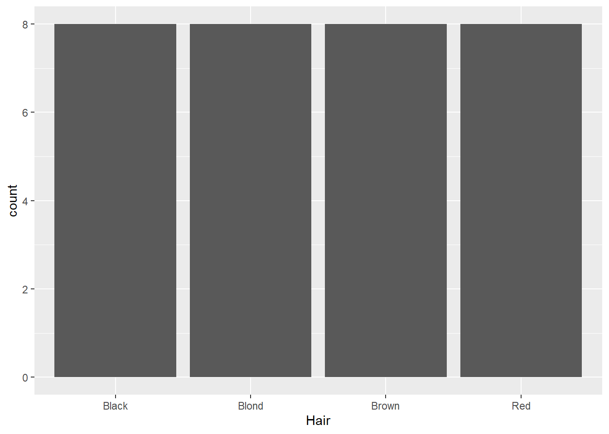
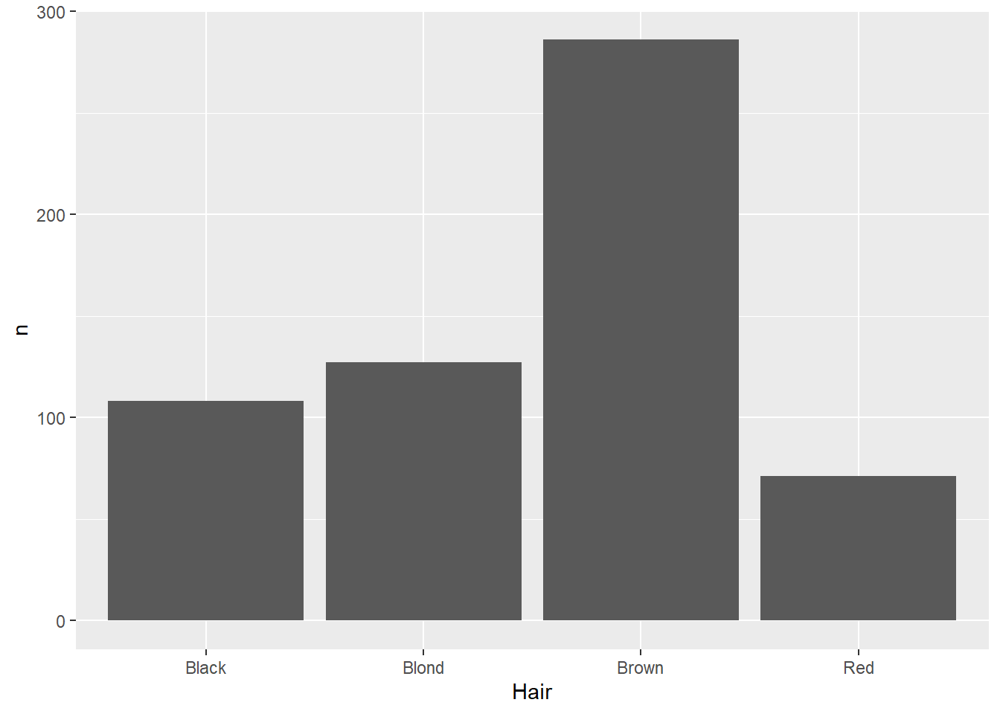
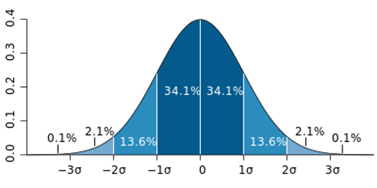

There’s no right or wrong way to do EDA, but many often start simply by exploring patterns in single variables. This is called univariate analysis. We do this
Nominal/Ordinal
What we’re looking for here are relative proportions. Does some categories stand out from the others? We’ve seen the geom_bar geometry be used for this. But what if the counts are already in the data? For example, look at the HairEyeColor dataset from the modeldata package:
hairEye<-as_tibble(HairEyeColor)hairEye
# A tibble: 32 × 4
Hair Eye Sex n
<chr> <chr> <chr> <dbl>
1 Black Brown Male 32
2 Brown Brown Male 53
3 Red Brown Male 10
4 Blond Brown Male 3
5 Black Blue Male 11
6 Brown Blue Male 50
7 Red Blue Male 10
8 Blond Blue Male 30
9 Black Hazel Male 10
10 Brown Hazel Male 25
# ℹ 22 more rows
This is data on hair and eye color recorded in a statistics class. Here, we can see columns giving the categories of hair and eye color, as well as sex, while the counts for each combination are stored in the n variable (shorthand for number). Normally, the geom_bar function counts each instance for us, so if we use that here, it will just count each time a category is mentioned in that column:
ggplot(data=hairEye,aes(x=Hair)) +geom_bar()

Not especially helpful. There are a few different ways we can deal with this, but one way is to use the geom_col function:
ggplot(data=hairEye,aes(x=Hair,y=n)) +geom_col()

This function makes two aesthetic mappings: the variable of interest on the x-axis (in this case, hair color), and the number of instances as a column-stored variable on the y-axis.
Distributions
Coming back to the question at the end of the last section: why histograms? By counting the number of instances in different bins across the range of values, the histogram ends up approximating a probability distribution:

A probability distribution is a way of visualizing the probability that any individual measurement in a population will produce a given value. Let’s dive into this using the olympics data:
There are several things we might look at when we’re visualizing data using a histogram:
Center
Where is the average, or most likely, value. Two common measures are mean (the sum of the values divided by their number) and median (the middle-most value):
mean(olympics$Weight,na.rm=TRUE)
[1] 73.77068
median(olympics$Height,na.rm=TRUE)
[1] 178
Spread
A common measure is the standard deviation, which takes the square root of the average of the squared deviations, or distances from the mean.
sd(olympics$Weight,na.rm=TRUE)
[1] 15.01602
sd(olympics$Height,na.rm=TRUE)
[1] 10.89372
Skew
Skew indicates whether the data are evenly spread around the center or have values that are notably larger (positive skew) or smaller (negative skew). For example, if we look at heights among male Olympians: